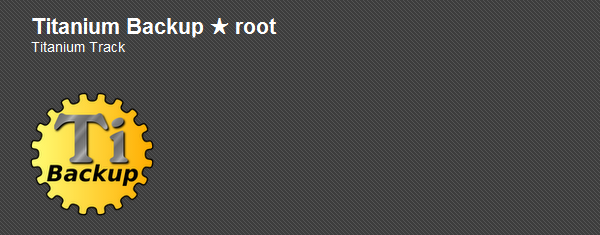
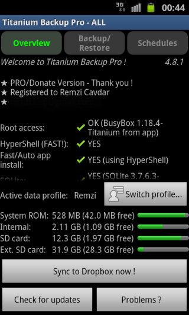
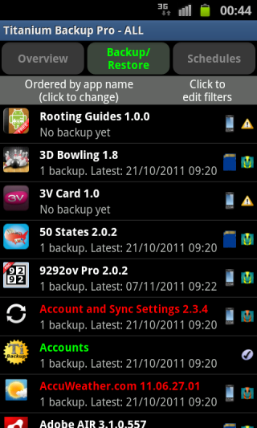
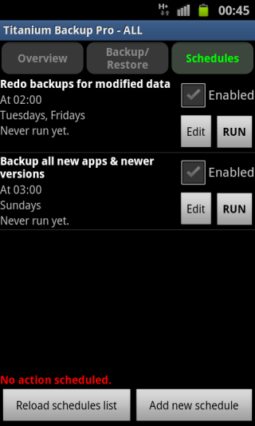
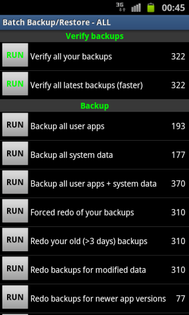

Android Backups
-

Titanium Backup
Titanium Backup is an application that allows you to backup all of your apps,
both on internal memory and your SD card, plus user data for those apps.
It is free, and you can get it in the market.
There is, however, a paid version that allows you to do a little more.
The app requires BusyBox, so search the market for that and install it for your device.
Then you are ready to open the app.

There are three tabs on the top,
but the one you will use the most is probably Backup/Restore.
You will see all of your apps listed.

Schedule backups
In the schedules tab you can also set times when you would like to do backups.

You can choose one by one the apps to backup or by tapping Menu>Batch you can see a list of commands to do a bunch at a time.

All of the backups are stored on your SD Card,
so it is fairly simple to get them off.
Just mount you SD Card and drag the titanuim backup folder to your desktop.
The premium version features better support and more batch operations.
It can be purchased for 5.99 USD.